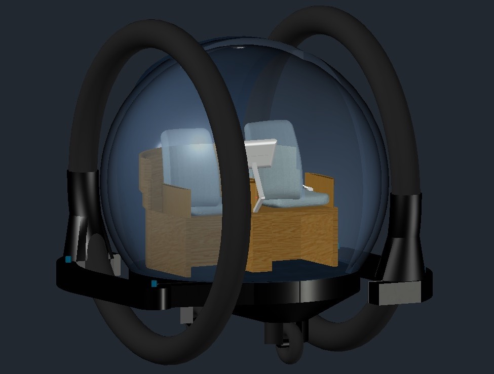
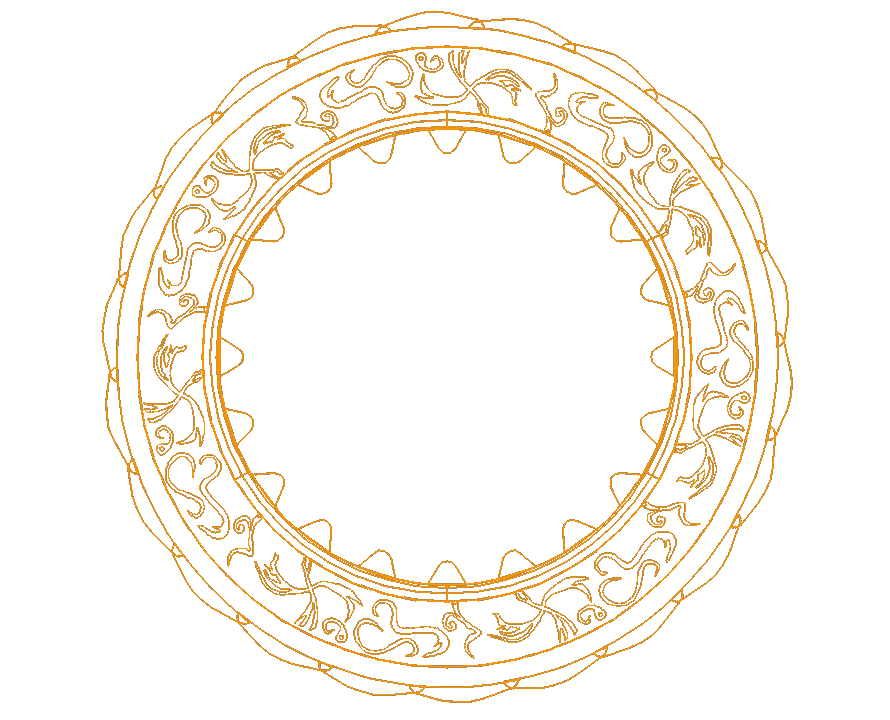

Latest Project
Meet Mario... A self-made robot buggy that is capable of driving on light surfaces and turn when needed, stop when there are obstacles, all the while sending updates wirelessly via WiFi.
Finished Projects
First Year Web Development Project
Objective: Create a website for a pet adoption centre and make it as interactive as possible. Click the link below to visit our website.
Code First: Girls 2019 Final Website
First Year Design Projects
The following design projects were made using the Software AutoCAD 2020 (Student Version)
Concept: Self-driving car designed by my group in the Second semester:

3D Modelling an object commonly found at home:
Summer AutoCAD Models
The inspiration for the following models is a show called Warrior Nun!


Second Year Design Projects
Concept: A visiting 'pod' that would allow family or friends visit a relative that may be in high risk of Covid19. There is a divide in the middle for this given risk.
Additionally, the pod must be easily assembled and disassembled. This is allowed by the cog mechanism located at its side.
I was in charge of the 3D Model of this pod:
Here is the finished real-life model made by one of my groupmates: